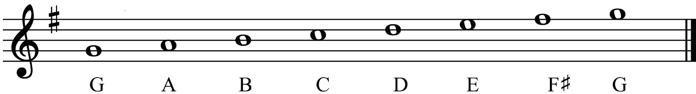

Table 2.1: Notes for the C major scale and their degrees
| Note | Degree |
|---|---|
| C | ^1 |
| D | ^2 |
| E | ^3 |
| F | ^4 |
| G | ^5 |
| A | ^6 |
| B | ^7 |
| C | ^8 |
Scale degrees are determined in relation to the tonic note. For example, in the scale of the G major, the tonic note is G. Therefore, the positions of other notes of the scale will be identified starting from note G. Figure 2.14 shows scale degrees in the key of the G major.

^1
^2
^3
^4
^5
^6
^7
^8
Observe any musical piece in G major and label each note with its scale degree.
Exercise 2.3
Identify the scale degrees of the following notes in the key of F major: C, A, G, B♭, D and E.
The circle of fifths
All songs are composed in specific keys. Each key has a key signature. The circle of fifths is a diagram that helps to understand keys and key signatures in music. It